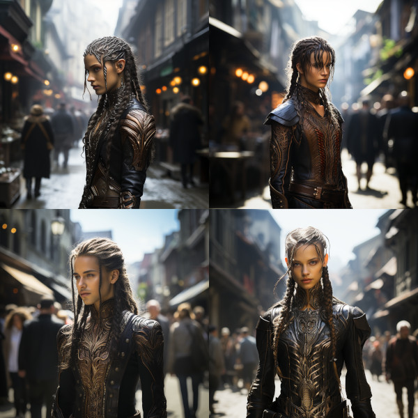

Figure 1: Thalia “Silvertongue” Swiftbrook

Figure 2: Thalia in disguise
From the moment of her first breath under the verdant canopy of Bellgrald, Thalia Swiftbrook was destined for a life beyond the ordinary. Born to the esteemed diplomats of the Horde Caelithra, she was swathed in the mantle of negotiation and statecraft from a young age. Yet, amidst the intricacies of diplomacy, Thalia’s heart yearned for the adrenaline rush of battle, for the dance of steel and shadow. It was her mother’s wisdom, a blend of challenge and permission, that spurred her forward. ’Master the art of words, and the art of war shall follow,’ she was told. Thalia embraced this challenge with the fervor of a wildfire. She absorbed the subtleties of her tribe’s diplomacy with astonishing alacrity, her mind always a step ahead, her arguments incisive yet elegant.
Her rapid mastery of Caelithra’s diplomatic arts did not merely stem from a longing for the clash of swords; it was driven by a deeper, burning need to excel, to be exceptional. Thalia did not just want to fight; she wanted to shine in the arena of combat, to be as revered with a blade as she was with words. And in the quiet moments, away from the watchful eyes of her tribe, Thalia nurtured a nascent, fervent creativity — a yearning to express her unique self, to weave her individual story into the grand tapestry of Taurashim lore.
Thus, Thalia’s journey unfolded as one of duality: in the sunlit courts and moonlit groves of the Vulwin Horde, she was the silver-tongued diplomat, the essence of grace and poise. But under the guise of night, in the hushed whispers of the Horde Gwennath encampments, she was the warrior-in-training, her blade singing a silent song of strength and defiance. In both worlds, Thalia sought to surpass, to be unparalleled — not for the sake of pride, but for the profound desire to leave her mark upon the world, a legacy of her own crafting.